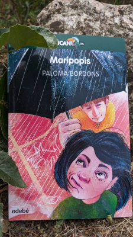

Maripopis
Querida gente, tengo libro nuevo.
Se llama Maripopis.
Lo he escrito e ilustrado yo y lo ha editado primorosamente Edebé.
(Bueno, yo también le he puesto bastante empeño al asunto, no os creáis)
Me gustaría mucho que lo leyerais.
Os cuento algo más sobre él en la sección Para leer.
